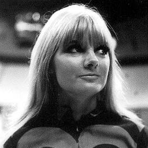

|
|
Polly, sometimes called Polly Wright in spin-off material, is a fictional character played by Anneke Wills in the long-running Britishscience fiction television series Doctor Who. A young woman from the year 1966, she was a companion of the First and Second Doctors and a regular in the programme from 1966 to 1967. Polly appeared in 9 stories (36 episodes). The only serial featuring Polly which is currently complete in the BBC archive is her first, The War Machines.
Polly first appears in the First Doctor serial, The War Machines, where she is working as a secretary to Professor Brett. Brett develops the artificial intelligence known as WOTAN, and Polly meets the Doctor (William Hartnell) and Dodo (Jackie Lane) when they come to investigate it. Polly befriends Dodo and takes her to a London nightclub called the Inferno, where they meet Ben Jackson (Michael Craze) and try to cheer up the Royal Navy sailor. When Polly is accosted by another patron in the Inferno, Ben comes to her rescue. Eventually, Ben and Polly aid the Doctor in his fight against WOTAN when the computer tries to take over the world. They are the bearers of the news of Dodo's decision to stay in 1966 to the Doctor, and accidentally get carried away in the TARDISwhen they try to return Dodo's key to the time machine.
|